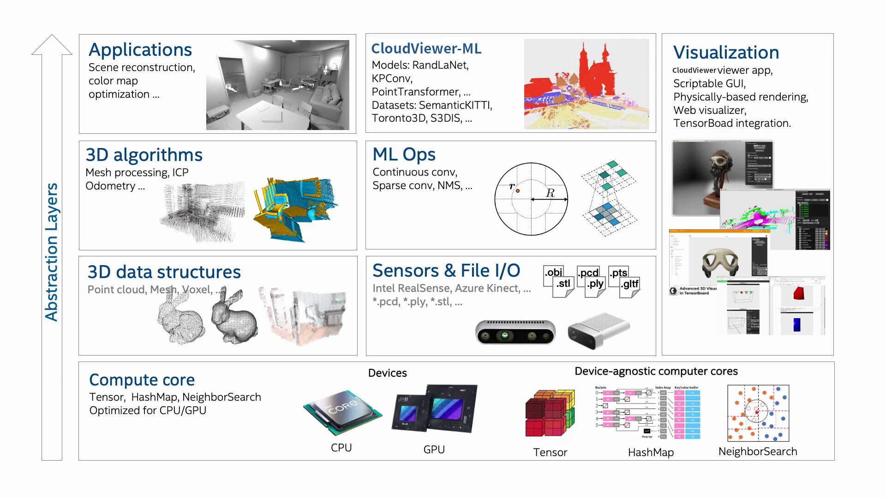
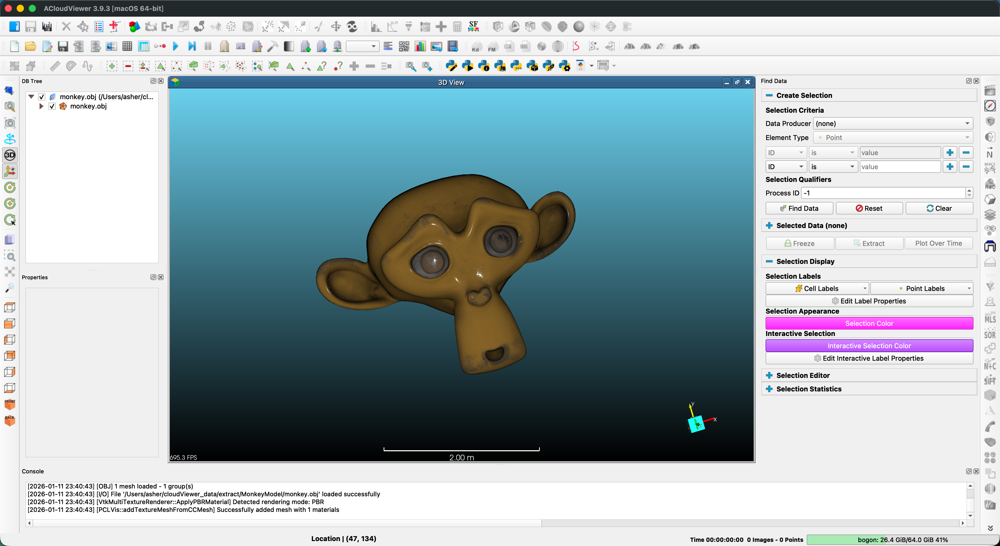
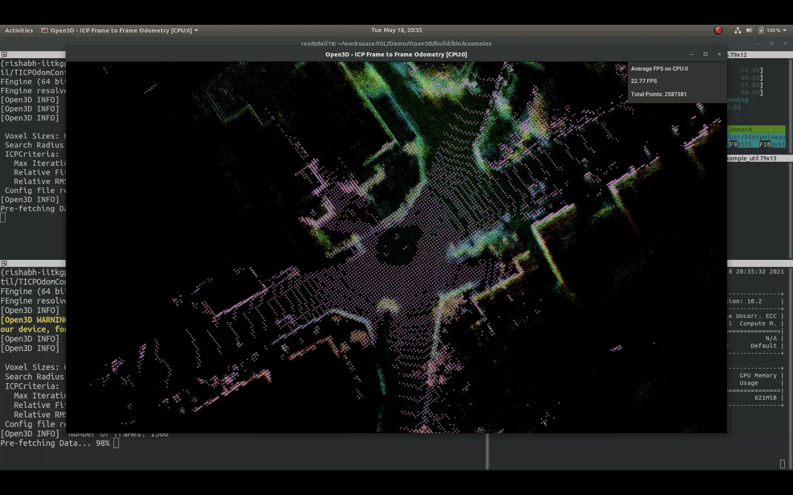
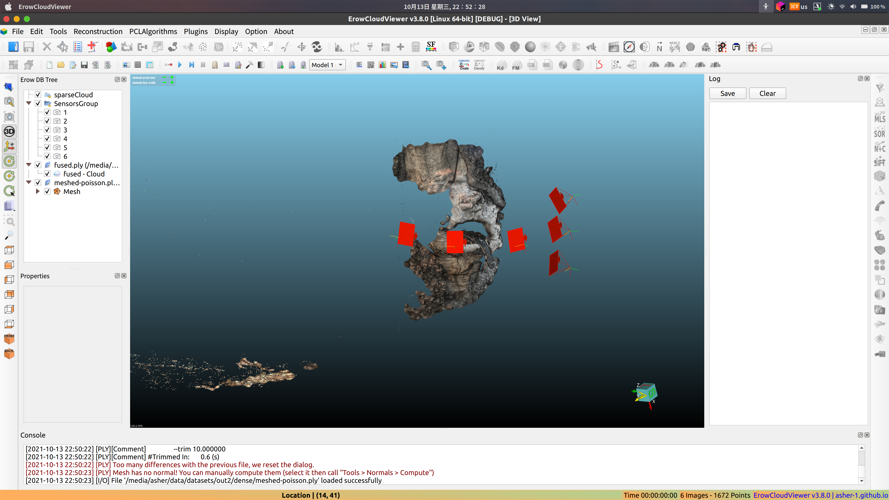
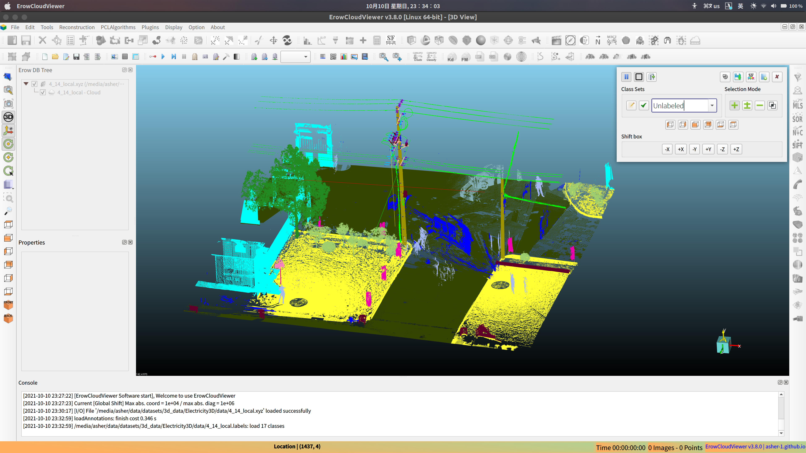

|
ACloudViewer
3.9.3
A Modern Library for 3D Data Processing
|
|
ACloudViewer
3.9.3
A Modern Library for 3D Data Processing
|
ACloudViewer is an open-source library that supports rapid development of software that deals with 3D data. The ACloudViewer frontend exposes a set of carefully selected data structures and algorithms in both C++ and Python. The backend is highly optimized and is set up for parallelization.
ACloudViewer includes the following core features:
ACloudViewer is organized into several key modules that work together to provide a complete 3D data processing pipeline:

Figure 1: ACloudViewer architecture showing the different layers and how they fit together to enable full end-to-end pipelines.
💡 Architecture Highlights:
• Layered Design: Clear separation between application, plugins, core processing, and foundation layers
• Extensibility: Plugin system allows adding new file formats and algorithms without modifying core
• Integration: Seamless interoperability with PCL, VTK, Qt, and other industry-standard libraries
• Dual API: Full functionality available in both C++ and Python
┌───────────────────────────────────────────────────────────────────────────────┐
│ ACloudViewer Application │
│ (ACloudViewer, CloudViewer, Python Bindings) │
└─────────────────────────────────┬─────────────────────────────────────────────┘
│
┌──────────────────┴──────────────────┐
│ │
┌──────────────▼────────────────┐ ┌───────────────▼────────────────┐
│ Plugin System │ │ Visualization Layer │
│ (IO + Standard Plugins) │ │ (Vtk-based 3D Viewer) │
│ │ │ │
│ • qLASIO, qE57IO, qDracoIO │ │ • Interactive 3D rendering │
│ • qCSF, qM3C2, qPoissonRecon │ │ • Scene graph management │
│ • qPCL, qCanupo, qTreeIso │ │ • User interactions │
└──────────────┬────────────────┘ └───────────────┬────────────────┘
│ │
└──────────────────┬──────────────────┘
│
┌─────────────────────────────────▼───────────────────────────────────────────┐
│ Core Processing Layer │
│ │
│ ┌──────────────┐ ┌──────────────┐ ┌──────────────┐ ┌──────────────┐ │
│ │ cloudViewer │ │ CV_db │ │ CV_io │ │ PCLEngine │ │
│ │ │ │ │ │ │ │ │ │
│ │ • ccPoint │ │ • Database │ │ • File I/O │ │ • PCL │ │
│ │ Cloud │ │ Management │ │ (PCD,PLY, │ │ Integration│ │
│ │ • ccMesh │ │ • Entity │ │ LAS,E57) │ │ • Filtering │ │
│ │ • ccHObject │ │ Hierarchy │ │ • Format │ │ • Registr. │ │
│ │ • ccOctree │ │ • Scene Mgmt │ │ Converters │ │ • Segment. │ │
│ └──────────────┘ └──────────────┘ └──────────────┘ └──────────────┘ │
│ │
│ ┌────────────────────────────────────────────────────────────────────────┐ │
│ │ Reconstruction Module │ │
│ │ • Surface Reconstruction • Mesh Generation • Poisson Recon │ │
│ └────────────────────────────────────────────────────────────────────────┘ │
└─────────────────────────────────────────────────────────────────────────────┘
│
┌─────────────────────────────────▼───────────────────────────────────────────┐
│ Foundation Layer │
│ │
│ • Eigen (Linear Algebra) • Qt (GUI & Widgets) │
│ • PCL (Point Cloud Library) • Boost (Utilities) │
│ • VTK (Visualization) • OpenMP (Parallelization) │
│ • CGAL (Geometric Algorithms) │
└─────────────────────────────────────────────────────────────────────────────┘
Data Flow:
Input Files → CV_io → Core Structures → Processing (Plugins/PCL) →
Visualization/Output → Export (CV_io)
Extension Points:
• Plugin System: Add custom I/O formats and processing algorithms
• Python API: Script automation and batch processing
• PCL Integration: Leverage PCL's extensive algorithm library
Here's a brief overview of the different components and how they fit together to enable full end-to-end pipelines:
Pre-built pip packages support Ubuntu 20.04+, macOS 10.15+ and Windows 10+ (64-bit) with Python 3.8-3.11.
To compile ACloudViewer from source, please refer to the compilation guide.
For detailed build instructions:
ACloudViewer provides powerful 3D visualization capabilities for interactive data exploration:

Main Application Interface

ICP Registration Example

3D Surface Reconstruction

Semantic Annotation
examples/Cpp/ directoryexamples/Python/ directoryPlease cite our work if you use ACloudViewer:
ACloudViewer is released under the MIT License. See LICENSE file for details.